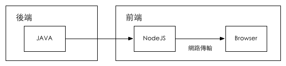
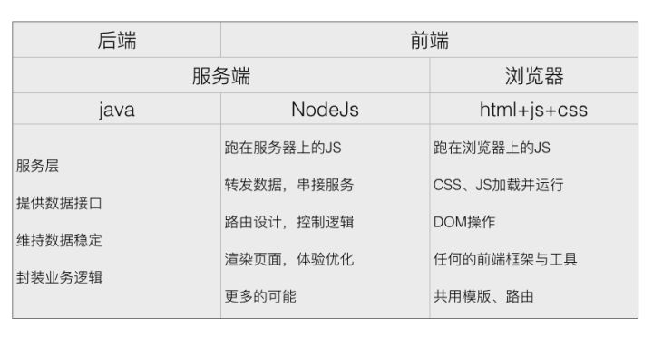

首先跳出前端
要看清 node 中间层在整个服务承担什么角色，首先我们要跳出前端的视野，把自己视角提示一个 level —— 去鸟瞰整个项目。
互联网时代其实就是信息时代，我们都是在利用数据交换，来产生价值。
一个最简单的数据流，前端–>后端–>数据库。
在这个原始的流程之间，我们有很多事情可以做。来看和前端最近这条线，前端–>后端。
- 代理
- 缓存
- 限流
- 日志
- 监控
- 鉴权
- 路由
- 灰度
- …
上面列出的是一些我们一个服务除了前端的展示，service 端的网络服务，API 的提供，数据落库等之外也要做的部分事情。在前后端没有分离的时代，这些都是交给后端来做，比如 Java,PHP 等。尤其在之前，套用模板语言就能解决大部分问题的时候，可以说前端不值得单独拿出来做。但是，当谷歌把 JavaScript 的宿主环境扩展到浏览器以外时，我们有了更宽泛的选择。
前后端分离

前后端分离几乎是现在开发的必选项。我要放弃传统的 MVC 模式，解除模板语言的限制，独立构建开发环境，SPA 页面做 SEO，分离部署依赖，统一 API 出口去适应更好的适应多端等等…….前后端分离的优劣我就不过多赘述。
在前后端分离的前提下，我们就可以在服务器(JAVA)和浏览器(JS)中间架一个中间层(NODEJS).

为什么选择 NODEJS 做中间层：
- 前端熟悉的语言，学习成本极低
- 都是 JS 可以前后端复用
- 相似的特性：时间驱动、非阻塞 I/O
- 执行速度也可接受
- 有利于一些 SEO 的解决方案

Node 中间层
在前后端分离的天然选择下，node 中间层可以承担更多的责任。
- 代理：在开发环境下，我们可以利用代理来，解决最常见的跨域问题；在线上环境下，我们可以利用代理，转发请求到多个服务端。
- 缓存：缓存其实是更靠近前端的需求，用户的动作触发数据的更新，node 中间层可以直接处理一部分缓存需求。
- 限流：node 中间层，可以针对接口或者路由做响应的限流。
- 日志：相比其他服务端语言，node 中间层的日志记录，能更方便快捷的定位问题（是在浏览器端还是服务端）。
- 监控：擅长高并发的请求处理，做监控也是合适的选项。
- 鉴权：有一个中间层去鉴权，也是一种单一职责的实现。
- 路由：前端更需要掌握页面路由的权限和逻辑。
- 服务端渲染：node 中间层的解决方案更灵活，比如 SSR、模板直出、利用一些 JS 库做预渲染等等。
- 更多的可能性
这些，都是在有个 node 中间层的好处，使得服务更加的灵活。当然，node 也有很多弊端，比如单进程，单线程，只支持单核 CPU，不能充分的利用多核 CPU 服务器。一旦这个进程崩掉，那么整个 web 服务就崩掉了。CPU 使用率较重、IO 使用率较轻的应用——如视频编码、人工智能等，Node.js 的优势无法发挥。
没有最好的方案，只有最合适的方案。